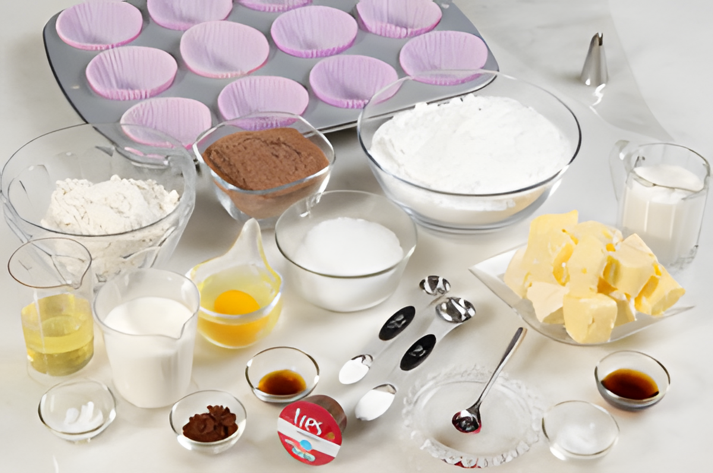
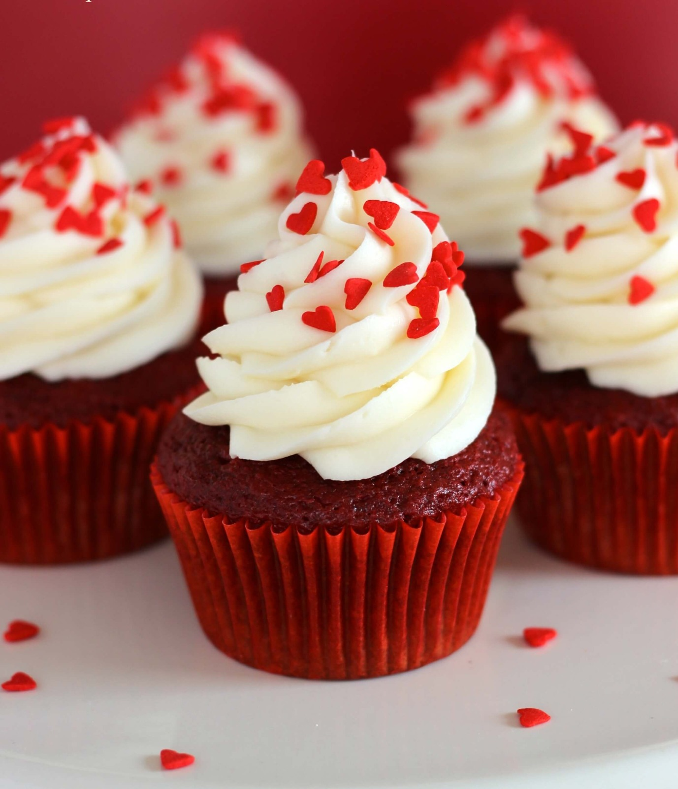

Cupcake
Ingredientes
- Massa;
- 3 gemas;
- 2 xícaras de açúcar;
- 1 colher de sopa de essência de baunilha;
- 250 ml de leite;
- 1 xícara de óleo;
- 3 claras em neve;
- 3 e 1/2 xícaras de farinha de trigo;
- 1 colher (sopa) de fermento;
- Recheio e cobertura a gosto.

Modo de Preparo
- Bata a gema, o açúcar e a baunilha na batedeira.
- Em seguida, acrescente o leite e o óleo e bata mais um pouco.
- Adicione as claras em neve, a farinha de trigo e o fermento e bata mais com o auxílio de um fouet (não bata na batedeira para que o fermento possa atuar).
- Disponha a massa em forminhas própria para cupcakes (sem encher muito) e leve ao forno até dourar.
- Após assado e frios, faça um buraco no centro de cada cupcake com uma faca.
- Reserve a tampinha.
- Coloque o recheio escolhido em um saco de confeitar e junte-o no furo, no centro do cupcake.
- Coloque a tampinha e cubra o cupcake com o a cobertura desejada, aqui usamos doce de leite para rechear e para cobrir.
- Coloque confeitos de sua preferência.
